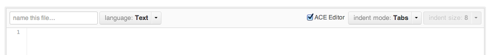

But you've got some issues. And I want to help you fix them.
Fix: Set a limit on how far out the sidebar can extend, to avoid this problematic state from ever occurring.
Fix: When there are zero stars, link to https://gist.github.com/username/gist_id/stars rather than https://gist.github.com/username/false.

Fix: Make consistent default values for indent mode and indent size.
Pro-level: If your defaults aren't my preferred values, please let me override the defaults in my GitHub settings. Personally, I like tabs of size 4.